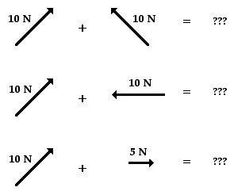
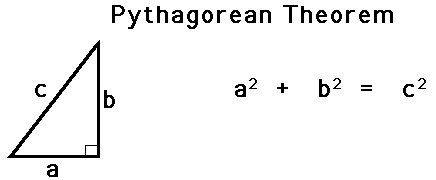
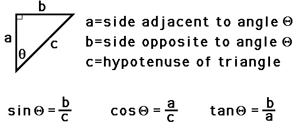
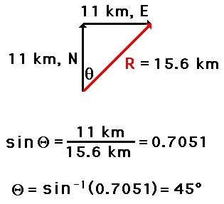
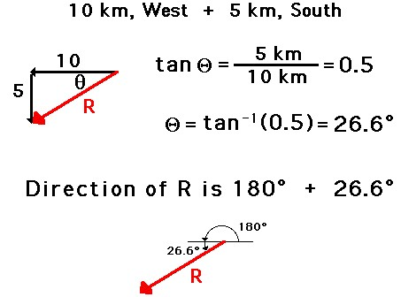
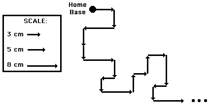
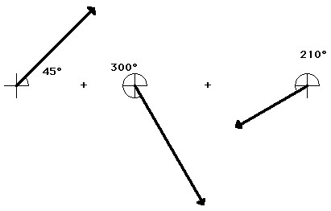
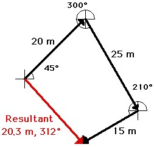

A variety of mathematical operations can be performed with and upon vectors. One such operation is the addition of vectors. Two vectors can be added together to determine the result (or resultant). For a basic review of vectors summed together along horizontal and vertical axes, feel free to go back and review the explanation of Free Body Diagrams and the concept of summing forces. In this section, the task of summing vectors will be extended to more complicated cases in which the vectors are directed in directions other than purely vertical and horizontal directions. For example, a vector directed up and to the right will be added to a vector directed up and to the left. The vector sum will be determined for the more complicated cases shown in the diagrams below.
There are a variety of methods for determining the magnitude and direction of the result of adding two or more vectors. The two methods that will be discussed in this lesson and used throughout the entire unit are:
The Pythagorean Theorem
The Pythagorean theorem is a useful method for determining the result of adding two (and only two) vectors that make a right angle to each other. The method is not applicable for adding more than two vectors or for adding vectors that are not at 90-degrees to each other. The Pythagorean theorem is a mathematical equation that relates the length of the sides of a right triangle to the length of the hypotenuse of a right triangle.
 To see how the method works, consider the following problem:
The result of adding 11 km, north plus 11 km, east is a vector with a magnitude of 15.6 km. Later, the method of determining the direction of the vector will be discussed.
Using Trigonometry to Determine a Vector's Direction
The direction of a resultant vector can often be determined by use of trigonometric functions. SOH CAH TOA is a mnemonic that helps one remember the meaning of the three common trigonometric functions - sine, cosine, and tangent functions. These three functions relate an acute angle in a right triangle to the ratio of the lengths of two of the sides of the right triangle. The sine function relates the measure of an acute angle to the ratio of the length of the side opposite the angle to the length of the hypotenuse. The cosine function relates the measure of an acute angle to the ratio of the length of the side adjacent the angle to the length of the hypotenuse. The tangent function relates the measure of an angle to the ratio of the length of the side opposite the angle to the length of the side adjacent to the angle. The three equations below summarize these three functions in equation form.
These three trigonometric functions can be applied to the trekker’s problem above in order to determine the direction of the trekker’s overall displacement. The process begins by the selection of one of the two angles (other than the right angle) of the triangle. Once the angle is selected, any of the three functions can be used to find the measure of the angle. Write the function and proceed with the proper algebraic steps to solve for the measure of the angle. The work is shown below.
Once the measure of the angle is determined, the direction of the vector can be found. In this case the vector makes an angle of 45 degrees with due East. Thus, the direction of this vector is written as 45 degrees. (Recall from earlier in this lesson that the direction of a vector is the counterclockwise angle of rotation that the vector makes with due East.)
The Calculated Angle is Not Always the Direction
The measure of an angle as determined through use of SOH CAH TOA is not always the direction of the vector. The following vector addition diagram is an example of such a situation. Observe that the angle within the triangle is determined to be 26.6 degrees using SOH CAH TOA. This angle is the southward angle of rotation that the vector R makes with respect to West. Yet the direction of the vector as expressed with the CCW (counterclockwise from East) convention is 206.6 degrees.
Use of Scaled Vector Diagrams to Determine a Resultant
The magnitude and direction of the sum of two or more vectors can also be determined by use of an accurately drawn scaled vector diagram. Using a scaled diagram, the head-to-tail method is employed to determine the vector sum or resultant. A common Physics lab involves a vector walk. Either using centimeter-sized displacements upon a map or meter-sized displacements in a large open area, a student makes several consecutive displacements beginning from a designated starting position. Suppose that you were given a map of your local area and a set of 18 directions to follow. Starting at the position known as home, these 18 displacement vectors could be added together in consecutive fashion to determine the result of adding the set of 18 directions. Perhaps the first vector is measured 5 cm, East. Where this measurement ended, the next measurement would begin. The process would be repeated for all 18 directions. Each time one measurement ended, the next measurement would begin. In essence, you would be using the head-to-tail method of vector addition.
The head-to-tail method involves drawing a vector to scale on a sheet of paper beginning at a designated starting position. Where the head of this first vector ends, the tail of the second vector begins (thus, head-to-tail method). The process is repeated for all vectors that are being added. Once all the vectors have been added head-to-tail, the resultant is then drawn from the tail of the first vector to the head of the last vector; i.e., from start to finish. Once the resultant is drawn, its length can be measured and converted to real units using the given scale. The direction of the resultant can be determined by using a protractor and measuring its counterclockwise angle of rotation from due East.
An example of the use of the head-to-tail method is illustrated below. The problem involves the addition of three vectors: 20 m, 45 deg. + 25 m, 300 deg. + 15 m, 210 deg. SCALE: 1 cm = 5 m
The head-to-tail method is employed as described above and the resultant is determined (drawn in red). Its magnitude and direction is labeled on the diagram.
Interestingly enough, the order in which three vectors are added has no effect upon either the magnitude or the direction of the resultant. The resultant will still have the same magnitude and direction regardless. This is known as the commutative property.